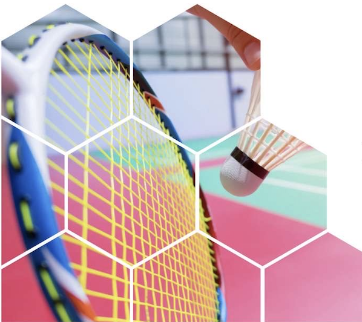

Why Restring Regularly?
Restringing your badminton racket regularly is essential for maintaining peak performance. Over time, strings lose tension, reducing power and control. Fresh strings provide:
- More Control: Consistent string tension improves shot accuracy.
- Better Power: Responsive strings return more energy into your smashes.
- Injury Prevention: Old, dead strings force players to swing harder, increasing strain.
- Longevity: Protects your racket frame from unnecessary stress.
For tournament players, restringing every 2–4 weeks is recommended. For casual players, every 2–3 months ensures consistent play.